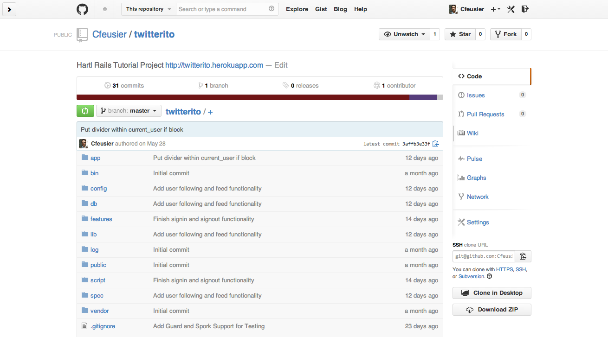
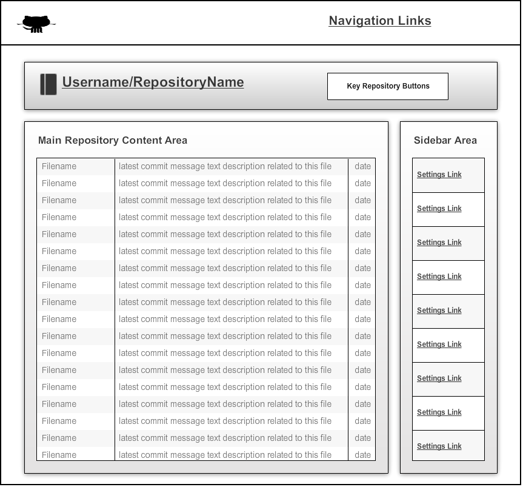
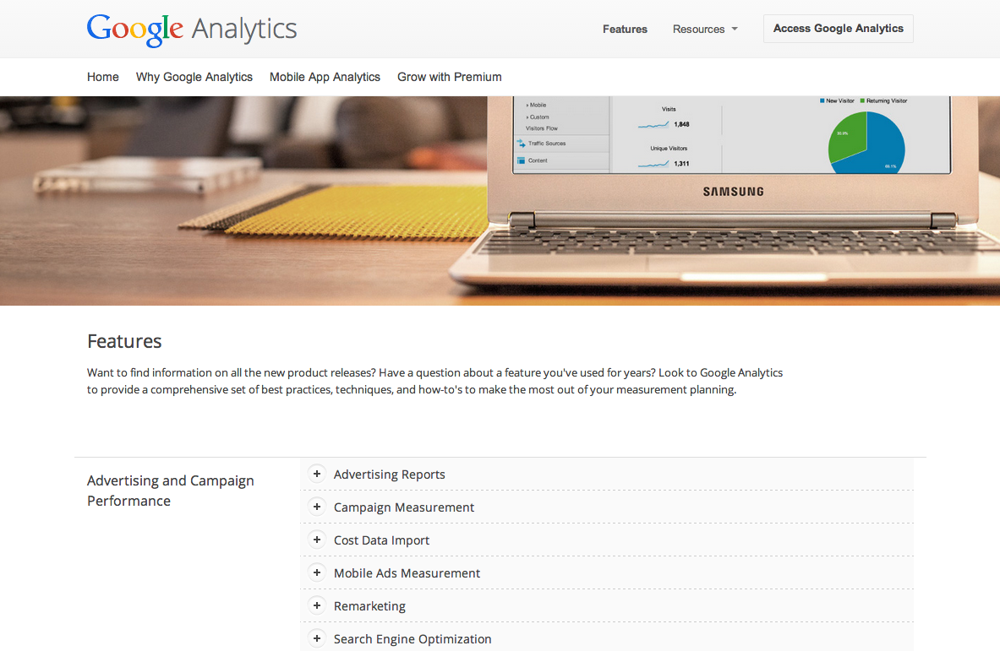
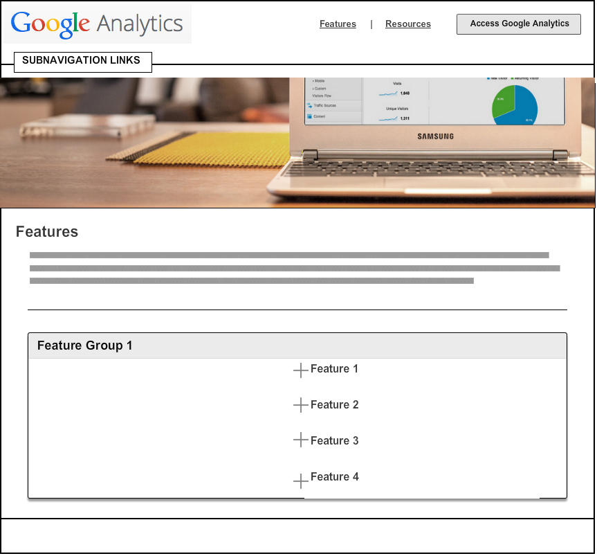

Wireframing as Part of the Web Design Process
In this post, I will wireframe and analyze a page from each of three of my favorite websites -- GitHub, Google Analytics, and Vimeo. It is important to learn wireframing because it allows you to greatly clarify and optimize the design process. Wireframing also reenforces the need to decouple the design from the content. Now that wireframing is motivated, let's hop in.
Wireframe of GitHub Repository Page
The Subject Page | Github.com/cfeusier/twitterito/
The Wireframe | Github.com/cfeusier/twitterito/
This page solves the standard "dashboard" problem -- clearly and "logically" organize all the necessary high-level information about the subject of the dashboard (a repository, in our case), while also providing clear access points into the different funnels of the subject. For example, it is important to be able to see high-level stats about your repository like the most recent commit for different files, to know which branch you are currently looking at, etc. It is also important to be able to quickly find the "controls" -- for GitHub, this includes settings, issues, pull requests, wiki, pulse, graphs, network, cloning, and downloading. You can do all of this easily from this "dashboard" page.
The visual challenges were alluded to above -- finding the balance between putting too much on the page while also allowing access to all different parts of the product from that one page (because it acts as a hub page).
Wireframe of Google Analytics Features Page
The Subject Page | Google.com/analytics/features/
The Wireframe | Google.com/analytics/features/
This page solves a pretty standard problem -- customer conversion. For a digital analytics suite, the most important selling point is the features, so one might conclude that this features page is the most important selling point for GA. In order to solve this problem, the page must be easily scannable while allowing for deeper exploration if necessary.
This page faces a few visual challenges, but I think the most important one is choosing the "hero" image at the top of the fold. This image needs to convey all the features of GA, all the benefits of those features, as well as something emotive to get people to feel something toward signing up.
Wireframe of Vimeo Homepage (logged-out)
The Subject Page | Vimeo.com/
* Make sure to log out if you are logged in
The Wireframe | Vimeo.com/
* Make sure to log out if you are logged in
This page is a classic "squeeze page." The problem that needs to be solved is one of converting new visitors in only one visit. They solve this by making it easy. Simple value propositions, icons to reenforce the points, a pretty background, and a slim form.
The visual challenges involved in creating a page like this are mainly related to contrast and readability. The page uses busy and vivid background images, so the rest of the content needs to be very sharp in order to see it comfortably. They solve this with dark backgrounds, vivid negative text, opacity of elements, and more.

Makin' Stacks, Yo... Full-Stacks
I am a student at Dev Bootcamp in San Francisco, California. Born and raised in the San Francisco Bay Area. Educated at California Polytechnic State University, San Luis Obispo (physics and philosophy). Graduate education at the University of Chicago (metalogic and philosophy of science).
My partner in crime is named Fiddle -- She likes chasing lizards -- Her best friend (other than me) is named Banjo -- Say Hi !
{kind=link}